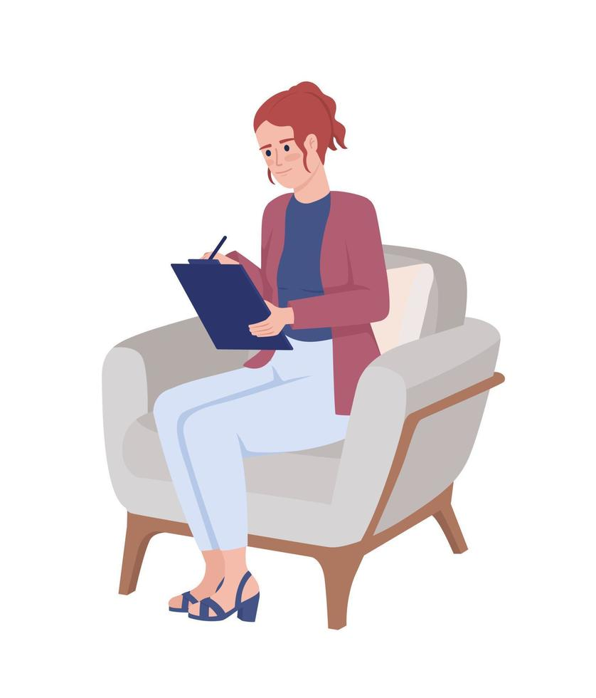
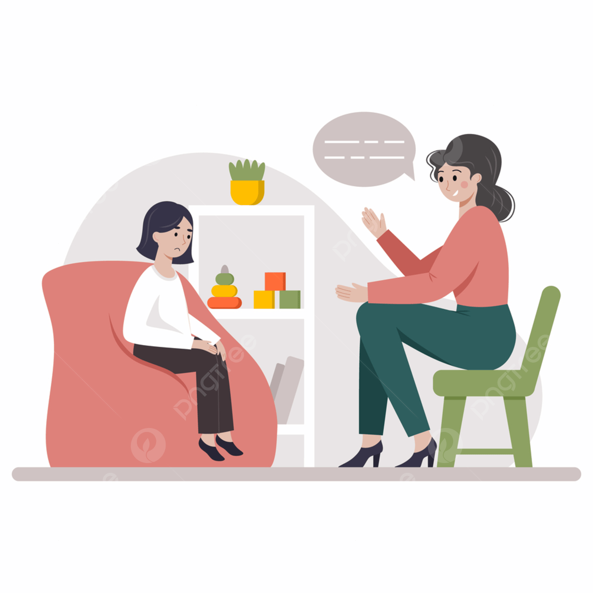

Soy una persona muy dinamica, siempre enfocada en brindar las mejores herramientas para apoyar a cualquier persona que tenga la capacidad de buscar ayudar y mas aun con aquellos niños y adolescentes que han tenido que pasar por situaciones criticas, enfocandome en brindarles un mejor estilo de vida acompañandolos en un camino de crecimiento y resiliencia.
Quieres Conocerme Más
Me encargare de diagnosticar y tratar los problemas y trastornos en los niños y niñas teniendo en cuenta los diferentes factores de riesgo: Biológicos: originados por la genética. Ambientales: influencia social y estilos de crianza. Temperamentales: rasgos característicos de la propia personalidad.
Trabajo en la evaluación y la intervención de problemas psicológicos en la niñez con conocimientos en psicopatología infantil, neurodesarrollo, educación y neuropsicología para desarrollar funciones como las siguientes: Evaluación psicológica, Psicoterapia infanto-juvenil y Asesoramiento educativo.
Hablar conmigo de tu salud mental puede: Ayudarte a que si has sido víctima de maltrato, recuperar la confianza. Enseñarte a acerca de las conductas y las relaciones saludables. Enseñarte a resolver conflictos y a mejorar tu autoestima.
Nicolas de 6 años esta muy agradecido con su psicologa Ingrid puesto que dice que sin la ayudo que brindo ella durante su proceso, no podia hoy dia ser un niño feliz.
Isabel de 14 años niña maltrata por sus padres, recurrio a la psicologa Ingrid donde en mas de 3 ocasiones habia intentado suicidarse, gracias a el amor y apoyo, hoy es una niña con muchas ganas de seguir su vida.
Leonor de 10 años tuve que vivir diferentes abusos por culpa del conflicto armado en Colombia cuando llego a Bogotá pudo encontrar una mano amiga de la psicologa Ingrid quien le ayudo a dejar atras el pasado y a enfocarse en la nueva oportunidad que le estaba brindando la vida.